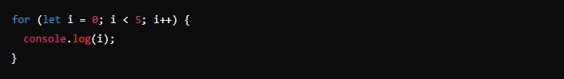
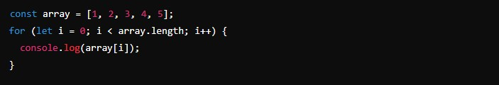
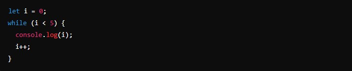
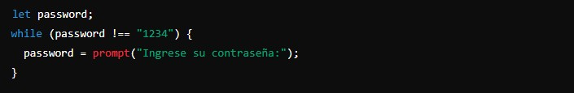
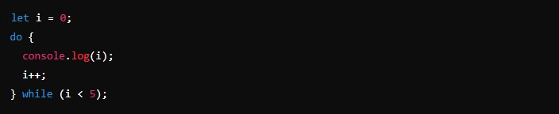
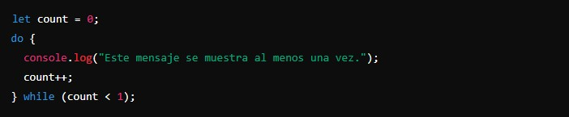
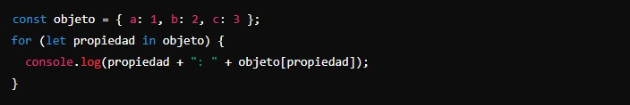
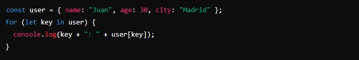
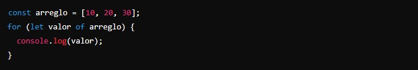
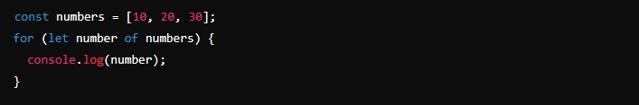

Los bucles son estructuras de control que nos permiten repetir un bloque de código varias veces. Esto es muy útil cuando queremos hacer cosas como recorrer una lista de elementos o ejecutar una acción varias veces sin tener que escribir el mismo código una y otra vez.
En JavaScript, hay varios tipos de bucles que podemos usar. Vamos a ver los más comunes y cómo funcionan:
- For:
Este es probablemente el bucle más común. Se usa cuando sabes cuántas veces quieres que se repita el bloque de código.
Tiene tres partes: la inicialización, la condición y la actualización.
Inicialización: let i = 0 (comienza con i igual a 0).
Condición: i < 5 (el bucle sigue mientras i sea menor que 5).
Actualización: i++ (después de cada iteración, i se incrementa en 1).
Ejemplo: Quieres recorrer un array y hacer algo con cada elemento.
 - While:
Este bucle se usa cuando no sabes exactamente cuántas veces se repetirá el bloque de código, pero tienes una condición que sabes que eventualmente será falsa.
Cambia la forma de crear el bucle, pero, al igual que el anterior, tiene las mismas partes: la inicialización, la condición y la actualización.
El bucle sigue ejecutándose mientras i sea menor que 5. Dentro del bucle, incrementamos i en 1 cada vez.
Ejemplo: Quieres pedirle a un usuario que ingrese una contraseña correcta. Seguirás pidiendo hasta que la contraseña sea correcta.
 - Do... while:
Este bucle es similar al while, pero con una diferencia clave: siempre ejecuta el bloque de código al menos una vez antes de comprobar la condición.
Primero ejecuta el bloque de código y luego verifica la condición i < 5. Si es verdadera, repite el bloque.
Ejemplo: Quieres mostrar un mensaje una vez y luego seguir mostrando mientras una condición sea verdadera.
 - For... in:
Este bucle se utiliza para recorrer las propiedades enumerables de un objeto. Es muy útil cuando trabajamos con objetos en JavaScript.
Recorre cada propiedad del objeto objeto y las muestra junto con sus valores.
Ejemplo: Quieres mostrar todas las propiedades y valores de un objeto.
 - For... of:
Este bucle se usa para recorrer elementos iterables como arrays, mapas y conjuntos. Es ideal cuando solo te interesa el valor de los elementos y no sus índices.
Recorre cada valor en el array arreglo y los muestra uno por uno.
Ejemplo: Quieres recorrer un array y mostrar cada valor.

For: cuando sabes cuántas veces se debe ejecutar el bucle.
While: cuando no sabes cuántas veces, pero tienes una condición para detenerlo.
Do...while: similar a while, pero se ejecuta al menos una vez.
For...in: para recorrer propiedades de un objeto.
For...of: para recorrer valores de elementos iterables (arrays, mapas, conjuntos).